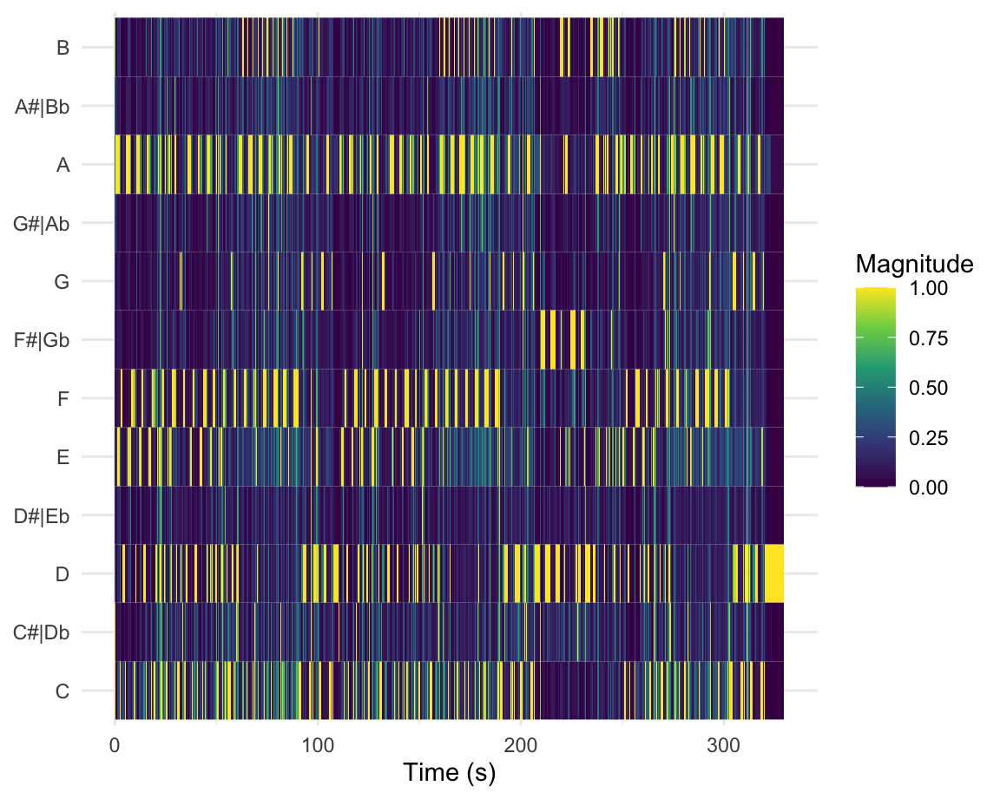

Main charts
Column
Chart A
Column
Chart B
Extra explanition plots
Charts are hopefuly selfexplanitory otherwise i will write something here


See Visualisation -> Cesptrogram
My Corpus is about the Loudness War, by using big data I’m wondering if the loudness from tracks really peaked during the Loudnesswar and if with the normalization tools from streaming services nowadays, the loudness from songs decreases again. I choose this, because i really hated the loudness war since my ear fatiqued way sooner and music was just flat. I really hope to find some proof that nowadays the loudnass war is finally ending.
My comparison points are from the Loudness factor of the spotify database, In which i will compare the output of the different decennia with the development of the loudness war. The representation is only limited by the amount of data it covers, since im not able to track all the music in the world i will pick the All out Playlist from the 70-10s to make my case.
My expectation is that the relative loudness wil decline at the same time that streaming services started to gain a lot of members. Since all the streaming services use normalization (every song is equally loud), and with that their isn’t any beneficial factor left for making a song sheer loud. I suspect producers will focus again on quality and impact.
At the same time i will look at the music of my favorite band The Red Hot Chili Peppers, since they have produced albums since the 80s, I would be interesting to see if they have followed the Loudness trend.
The Loudness War refers to a trend in music production where songs are made as loud as possible, often at the expense of dynamic range and sound quality. This is achieved through the use of various compression and limiting techniques that increase the volume of a recording, which can make it sound more aggressive and powerful.
The goal of the Loudness War is to make a song stand out on the radio or in a playlist, where louder songs are more likely to catch the listener’s attention. However, this pursuit of loudness has led to the overuse of these techniques, which can result in distortion, loss of detail, and listener fatigue.
While loudness can be effective in some contexts, such as in rock or electronic music, it can also detract from the emotional impact of a song, and make it sound more monotonous or tiresome over time. As a result, many music professionals and fans advocate for a return to more natural, dynamic sound production, and for musicians to prioritize the quality and impact of their music over sheer volume.
The Red Hot Chili Peppers (RHCP) are an American rock band formed in Los Angeles, California, in 1983. HCP’s style combines elements of funk, punk, and rock music, RHCP’s music often deals with themes of love, sexuality, and California culture The band has sold over 80 million records worldwide, making them one of the best-selling bands of all time.
The Red Hot Chili Peppers have released a total of 11 studio albums, several live albums, compilations, and EPs. Here’s a brief overview of their discography:
The Red Hot Chili Peppers (1984) - This is the band’s debut album, featuring a more punk rock sound and an early lineup that included founding members Anthony Kiedis, Flea, Hillel Slovak, and Jack Irons.
Freaky Styley (1985) - This album saw the band exploring more funk and soul influences, with George Clinton producing. The Uplift Mofo Party Plan (1987) - This album marked the return of guitarist Hillel Slovak and drummer Jack Irons to the band, and is considered one of their most energetic and raw releases. Mother’s Milk (1989) - This album marked a major breakthrough for the band, with the hits “Higher Ground” and “Knock Me Down” gaining them mainstream attention. Blood Sugar Sex Magik (1991) - This album is considered a masterpiece by many, featuring the hit singles “Give It Away,” “Under the Bridge,” and “Suck My Kiss.” It remains one of the band’s most successful and beloved releases. One Hot Minute (1995) - This album marked the departure of guitarist John Frusciante, and the arrival of new guitarist Dave Navarro. The album saw the band experimenting with more psychedelic and heavy rock sounds. Californication (1999) - This album marked the return of John Frusciante to the band, and saw them returning to a more melodic and accessible sound. The title track and “Scar Tissue” became massive hits. By the Way (2002) - This album continued in the vein of Californication, with a more polished and pop-oriented sound. Hits included “By the Way” and “Can’t Stop.” Stadium Arcadium (2006) - This double album is one of the band’s most ambitious releases, featuring a diverse range of styles and sounds. It won the band multiple Grammy Awards, including Best Rock Album. I’m with You (2011) - This album marked the departure of guitarist John Frusciante, and the arrival of new guitarist Josh Klinghoffer. The album saw the band experimenting with more electronic and atmospheric sounds. The Getaway (2016) - This album marked the return of producer Danger Mouse, and saw the band continuing to explore new sounds and styles. The title track and “Dark Necessities” were popular singles. Unlimited Love (2022) - The newest album.

Growth Spotify

Sales CD
As seen in the graph spotify started to take off in the end of the 00s. At the same time we see a massive decline in Sales for CD’s. This suggest a correlation. I get back on this in the conclusion.
Charts are hopefuly selfexplanitory otherwise i will write something here

I dont see any usable way of incorporating a chromagram into my corpus. If someone has a suggestion I would love to hear it. Thanks in advance.


I choose to make 2 cepstrograms, since my corpus is so loudness based the c01 (loudness factor) is the obivious most interseting factor to focus on here. As explained in the background the loudnesswar has an influence on the dynamic range. This is very good visible in these examples :
The song Snow from 2006 has a lot of homogenity in the c01 factor which respresents the same loudness trough the entire song, apart form the intro en end..
On the other hand the song Under The Bridge from 1991 is very different. The c01 from this graph is obviously more different throughout the entire song, which snow a lot of dynamic range thourgh the entire song.
These observations perfecly align with my hypotheses.
Conclusion Research:
One thing what really influences this research is the influence of remasters. For example Smooth Criminial from Michael Jackson in the playlist is an Remaster. Sadly more often than not the orignial master isn’t available on spotify. So the original data is not always available for this research. Understandle enough this makes the research less of a representation than wished for.
Spotify playlists used: